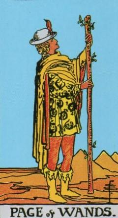
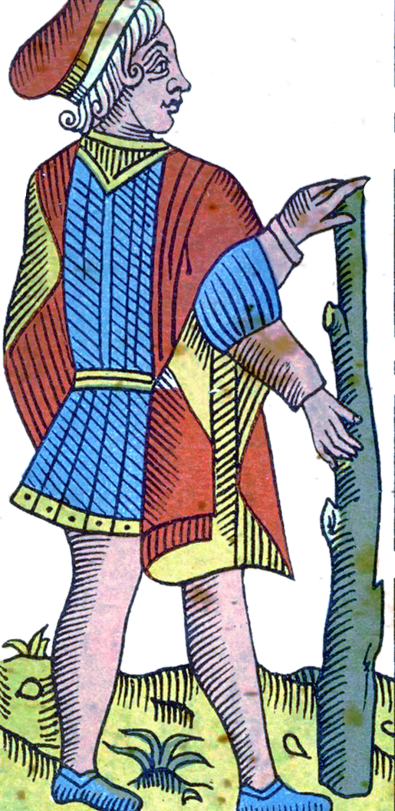
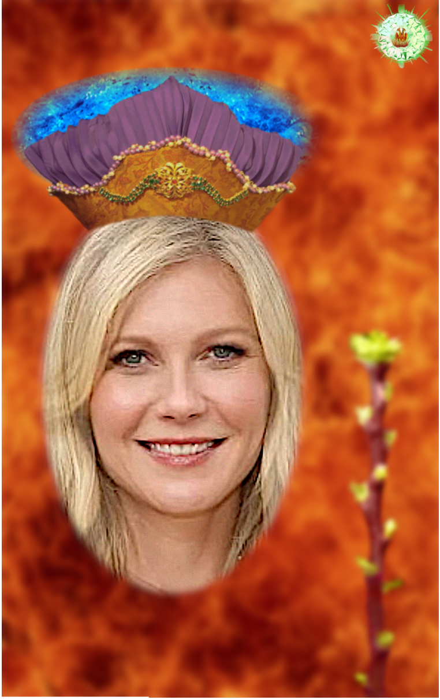
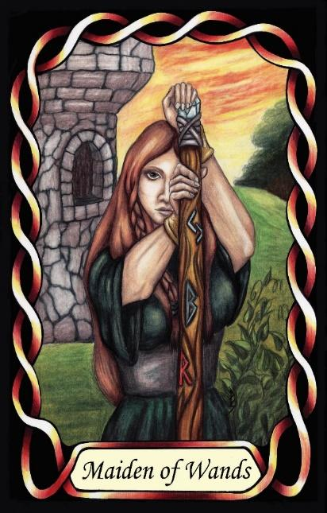

Page of Wands
The Protector (ISFJ – SiFe)




Page |
Concrete Collaborative |
||
Action |
|||
Introverted Sensing Extroverted Feeling, |
|||
13.8% of population |
|||
Examples: Gwyneth Paltrow, Kirsten Dunst, Mother Teresa |
|||
Meaning of Life: Minimising Suffering. Nurturing |
|||
Astrology: Leo |
|||
Pages of Wands are warm, steadfast protectors who bring care into the realm of action. As SF Pages, they are concrete, collaborative, and deeply attuned to the wellbeing of others. Their introverted sensing gives them a strong internal sense of duty, shaped by personal experience and long-held values. They know what is right because they have lived it, felt it, and internalised it.
Their extroverted feeling directs this duty outward. They watch over their people, maintain harmony, and step in when someone is struggling. Their compassion is not passive or sentimental — it is active, expressed through doing, fixing, and intervening.
With Leo as their astrological backbone, this Page gains a protective Fire. Leo brings courage, loyalty, and a fierce devotion to those they care about. This is not a soft or timid personality. It is warm, proud, and unflinching when someone vulnerable needs defending. They are the guardian who stands between danger and the people they love.
Placed in the Fire suit of Wands, their nurturing instinct becomes purposeful action. They don’t merely worry about suffering — they move to prevent it. They organise, they intervene, they take responsibility. Their care is expressed through decisive, practical effort: the steady flame that keeps others safe.
They focus on reducing the negative side of life — preventing harm, easing burdens, and shielding others from hardship. Their presence is reassuring, stabilising, and quietly courageous. They are the ones who show up, who take on the load, who make sure no one is left to struggle alone.
At their core, they seek to minimise suffering. Their meaning in life is found in nurturing, healing, and creating environments where people feel safe and cared for. They are the Protectors of the Wands suit — warm-hearted, loyal, and action-oriented, bringing steadfast courage to every situation they touch.